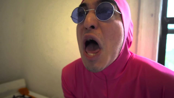

Francis of the Filth
Papa Franku is the character that the show is mainly based on, he is anti-everything.
Pink Guy/Pink Omega
Pink Guy is a character that is in a pink suit at all times, talks mainly in weird noises and moans.
Salamander Man
Nose/butt flute, nyess. that's it...
Lord Chin Chin(False god)
Lord Chin Chin is a very powerful character in the show, so powerful in fact that he calls himself a god.